자유 생성 실험 비교
같은 가상 인물 · 같은 디자인 시스템으로 조건만 바꿔 만든 지면입니다. 썸네일은 1440px 첫 화면이고 누르면 지면이 열립니다. 인물과 기록은 모두 시연용 가상 자료입니다. 방법과 판정은 결과 문서에 있습니다.
배준호 · ML 리서치 clarity
구조화 생성설계 → 채우기 · 키트 렌더링
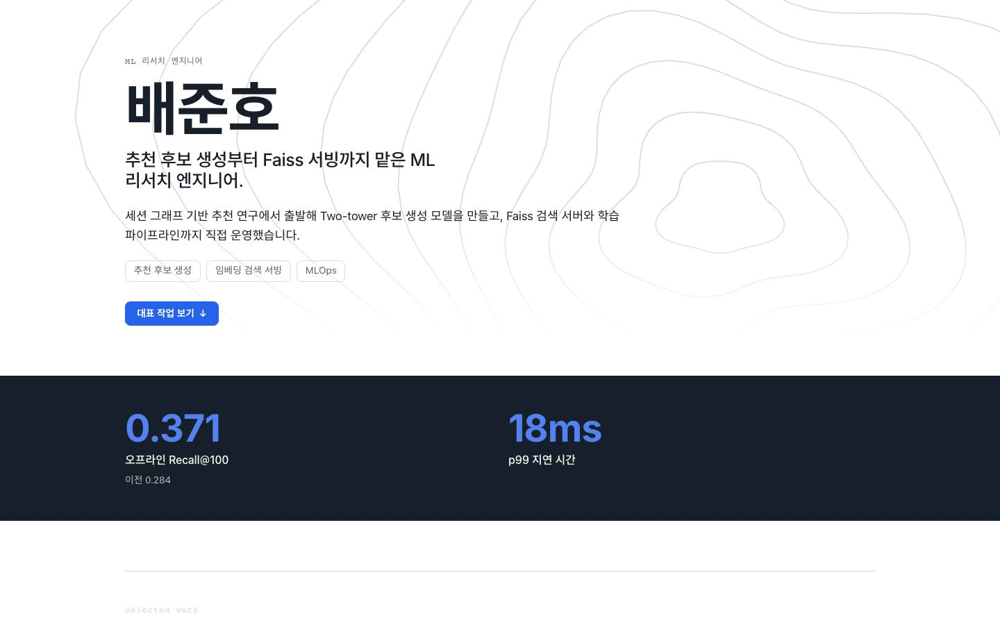


섹션 4/5 · 근거 8/8 · 경력 제목 없음
첫 화면 최대 83px · 223자 · 높이 4,929px
72초 · $0.68
자유 생성(지금)키트 부품으로 조판
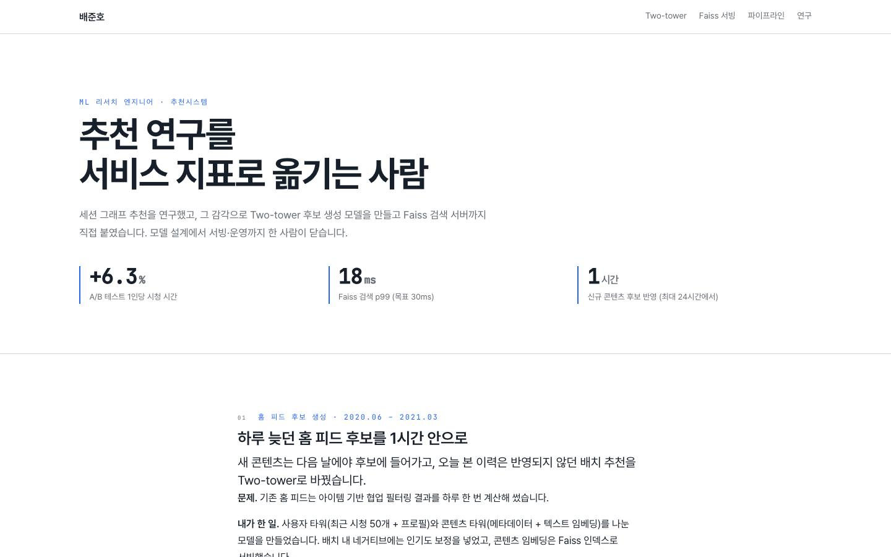


섹션 2/5 · 근거 4/8 · 경력 제목 없음
첫 화면 최대 58px · 529자 · 높이 3,454px
28초 · $0.08
키트 없이 자유모델이 CSS 전체 작성
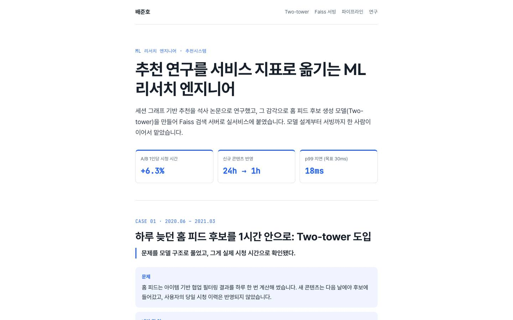


섹션 5/5 · 근거 3/8 · 경력 제목 없음
첫 화면 최대 46px · 448자 · 높이 3,189px
35초 · $0.10
+ 정리본원문 대신 자료 정리본
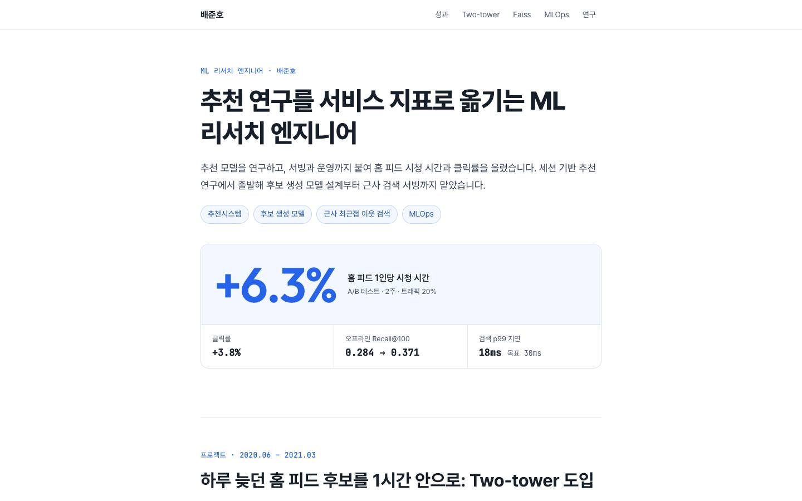


섹션 5/5 · 근거 8/8 · 경력 제목 없음
첫 화면 최대 88px · 367자 · 높이 4,169px
122초 · $0.28 (정리 $0.16 포함)
+ 디자인 지침frontend-design 본문
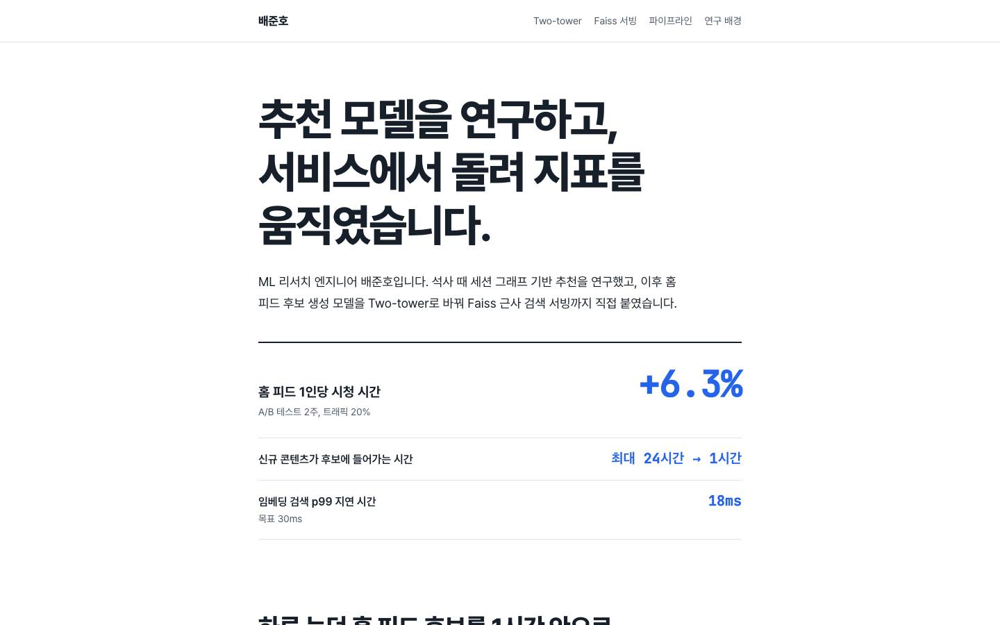


섹션 2/5 · 근거 5/8 · 경력 제목 없음
첫 화면 최대 64px · 284자 · 높이 3,661px
117초 · $0.21
24시간 막대 옆에 놓인 1시간짜리 짧은 막대. 같은 축 위에 실제 비율(1/24)로 그려, 스크롤해 들어올 때 한 번 자라난다.
+ 정리본 + 지침둘 다
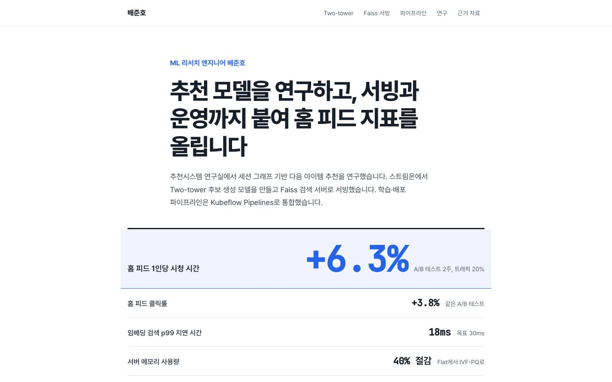


섹션 5/5 · 근거 8/8 · 경력 제목 없음
첫 화면 최대 83px · 340자 · 높이 5,527px
141초 · $0.31 (정리 $0.16 포함)
390 넘침
증거 원장. 첫 화면에서 +6.3%가 한 줄 전체를 차지하고, 그 아래 네 개의 근거가 같은 눈금선에 붙어 읽힌다. 성과가 카드가 아니라 장부처럼 보인다.
둘 다 · 배치 자유스타일은 색 · 서체 · 밀도만
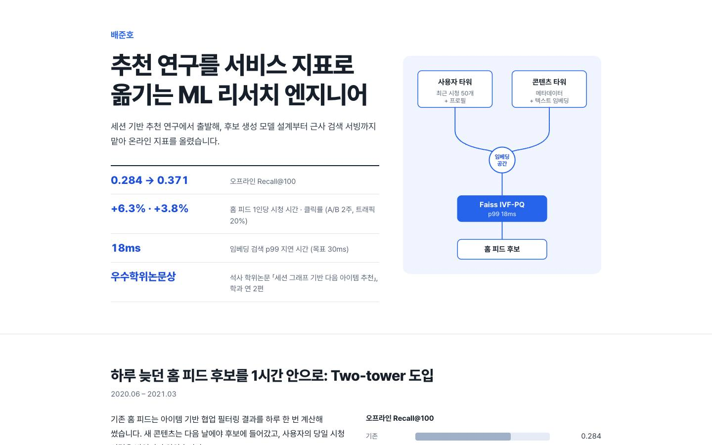


섹션 5/5 · 근거 8/8 · 경력 제목 없음
첫 화면 최대 50px · 489자 · 높이 3,653px
126초 · $0.29 (정리 $0.16 포함)
첫 화면의 투타워 SVG. 두 타워의 선이 로드 때 한 번 그려져 임베딩 공간에서 만나고, 그 아래 Faiss와 홈 피드 후보로 이어진다. 이 사람이 한 일의 구조가 그림 하나로 읽힌다.
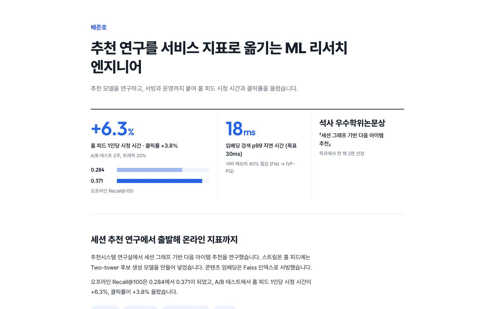


섹션 5/5 · 근거 8/8 · 경력 제목 없음
첫 화면 최대 56px · 526자 · 높이 4,097px
101초 · $0.31 (정리 $0.16 포함)
30ms 지연 예산 트랙 안에 18ms가 채워지는 막대. 목표와 실측이 한눈에 보인다.
둘 다 · 디자인 스펙디자인 시스템의 시각 규칙 추가
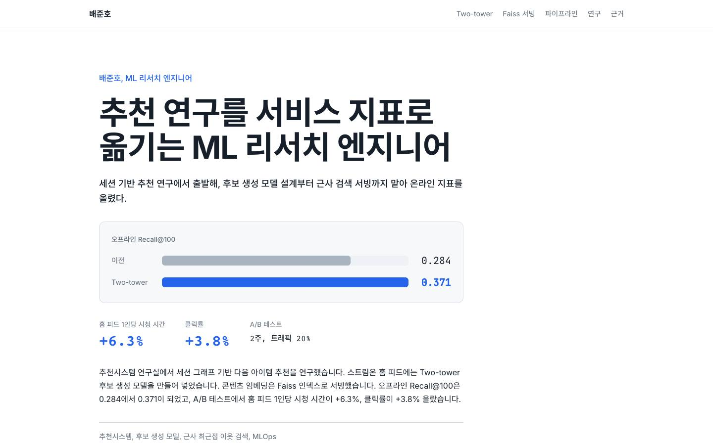


섹션 5/5 · 근거 8/8 · 경력 제목 있음
첫 화면 최대 64px · 450자 · 높이 4,549px
118초 · $0.30 (정리 $0.16 포함)
히어로의 Recall@100 0.284 → 0.371 막대 한 쌍. 이전 막대는 회색, 이후 막대는 파랑으로 로드 시 한 번 자라난다. 같은 막대 문법이 이후 지연·메모리·반영 시간 비교에도 반복된다.
문가령 · 데이터 분석 clarity
구조화 생성설계 → 채우기 · 키트 렌더링
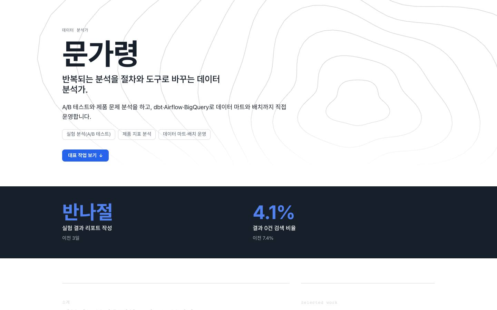


섹션 2/4 · 근거 6/8 · 경력 제목 없음
첫 화면 최대 83px · 232자 · 높이 4,360px
78초 · $0.67
자유 생성(지금)키트 부품으로 조판
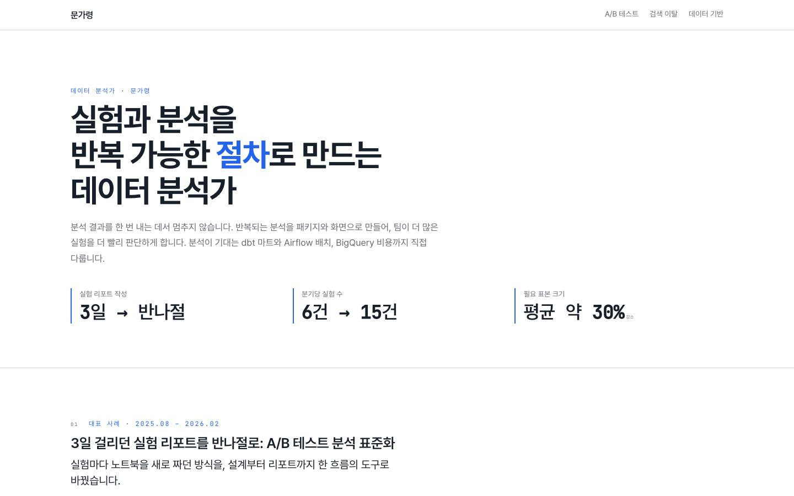


섹션 4/4 · 근거 6/8 · 경력 제목 없음
첫 화면 최대 58px · 359자 · 높이 3,422px
31초 · $0.08
키트 없이 자유모델이 CSS 전체 작성
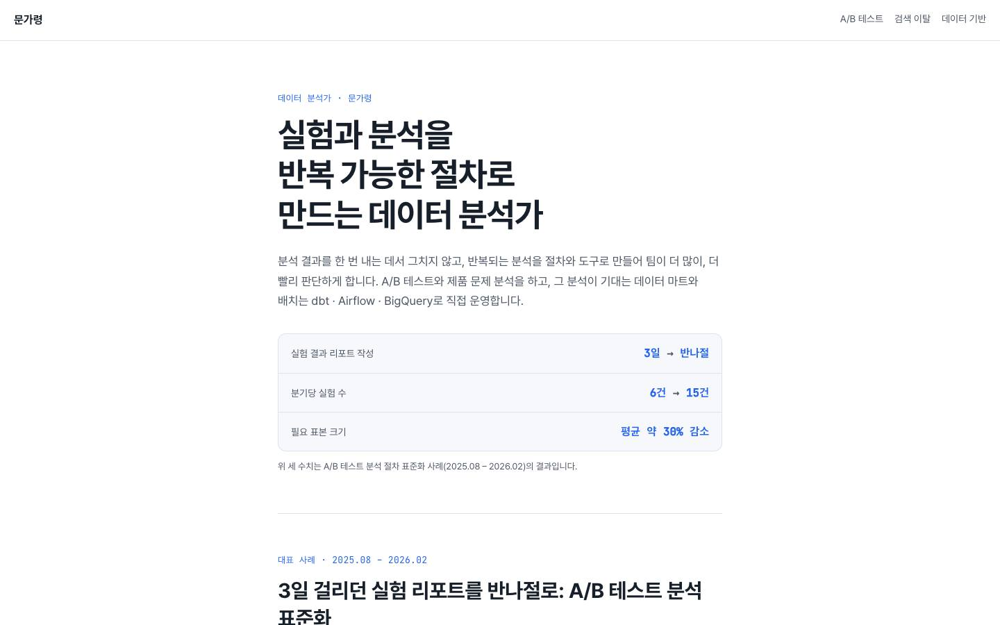


섹션 4/4 · 근거 7/8 · 경력 제목 없음
첫 화면 최대 48px · 378자 · 높이 3,469px
42초 · $0.10
+ 정리본원문 대신 자료 정리본
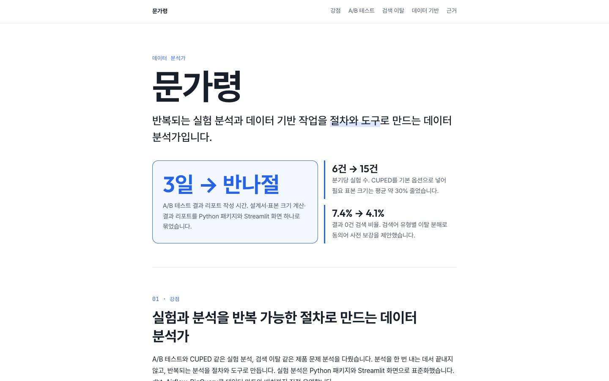


섹션 4/4 · 근거 8/8 · 경력 제목 없음
첫 화면 최대 84px · 506자 · 높이 5,130px
129초 · $0.35 (정리 $0.23 포함)
+ 디자인 지침frontend-design 본문
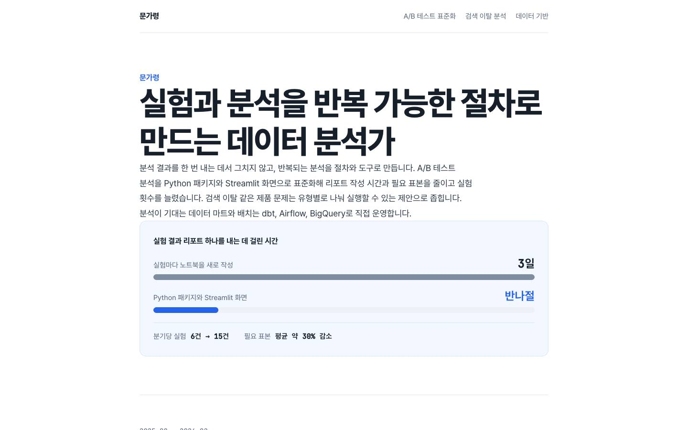


섹션 4/4 · 근거 6/8 · 경력 제목 없음
첫 화면 최대 68px · 401자 · 높이 3,525px
115초 · $0.20
첫 화면의 막대 카드. 페이지가 열릴 때 3일짜리 회색 막대가 먼저 차오르고 이어서 반나절짜리 파란 막대가 짧게 닫힌다. 페이지에서 유일하게 자동으로 움직이는 부분이다.
+ 정리본 + 지침둘 다
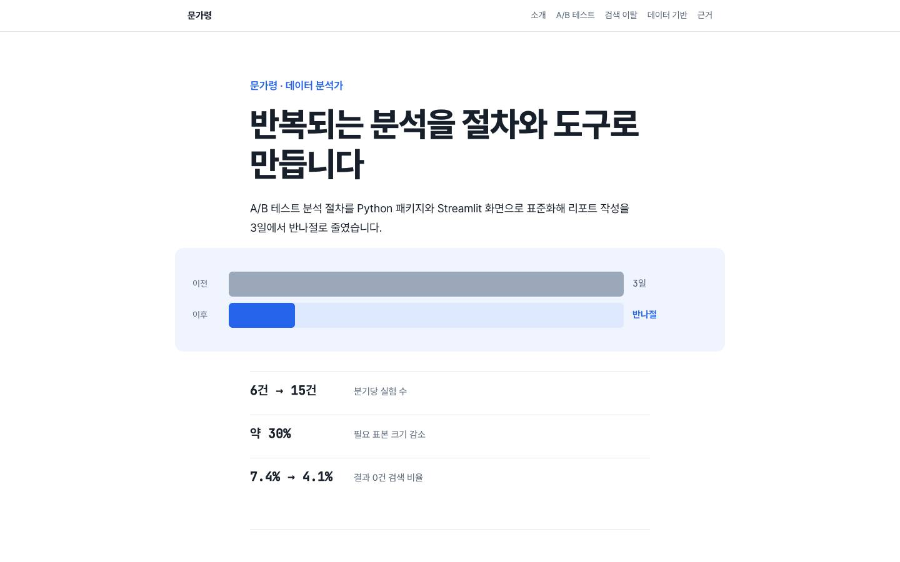


섹션 4/4 · 근거 8/8 · 경력 제목 없음
첫 화면 최대 54px · 193자 · 높이 4,680px
131초 · $0.35 (정리 $0.23 포함)
첫 화면의 3일 대 반나절 막대. 페이지를 열 때 한 번만 자란다. 같은 시각 언어(긴 막대에서 짧은 막대로)가 이후 모든 수치에 반복된다.
둘 다 · 배치 자유스타일은 색 · 서체 · 밀도만
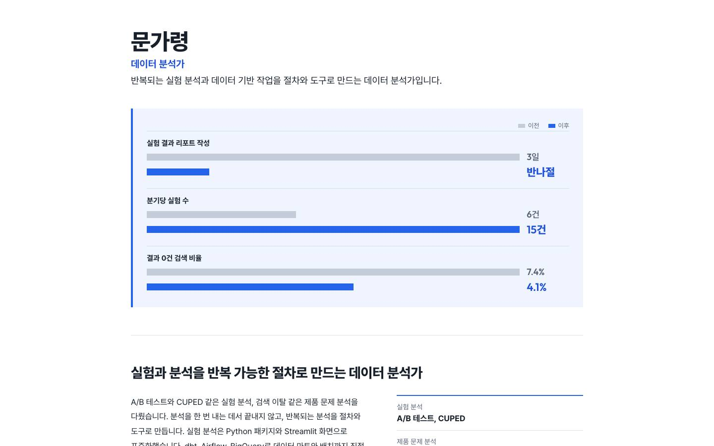


섹션 4/4 · 근거 8/8 · 경력 제목 없음
첫 화면 최대 46px · 351자 · 높이 3,536px
135초 · $0.36 (정리 $0.23 포함)
첫 화면의 이전·이후 막대 비교표다. 세 성과가 모두 같은 형태로 읽히고, 막대 길이는 실제 값의 비율을 따른다. 파란 막대가 로드 시 한 번 왼쪽에서 자라난다.
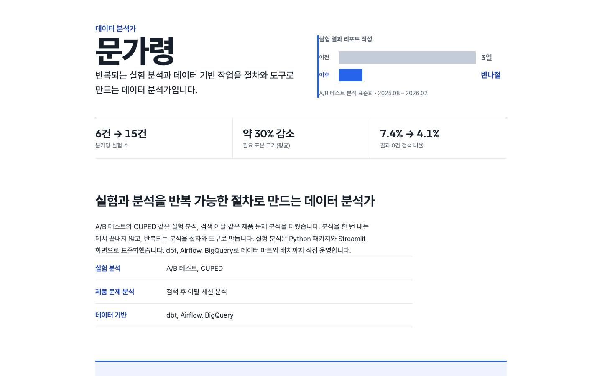


섹션 4/4 · 근거 8/8 · 경력 제목 없음
첫 화면 최대 76px · 452자 · 높이 3,467px
105초 · $0.40 (정리 $0.23 포함)
첫 화면의 이전/이후 막대 한 쌍. 이전 막대는 회색으로 길게, 이후 막대는 파랑으로 짧게 그려 한눈에 '줄었다'를 읽게 한다. 로드될 때 한 번만 자란다.
둘 다 · 디자인 스펙디자인 시스템의 시각 규칙 추가
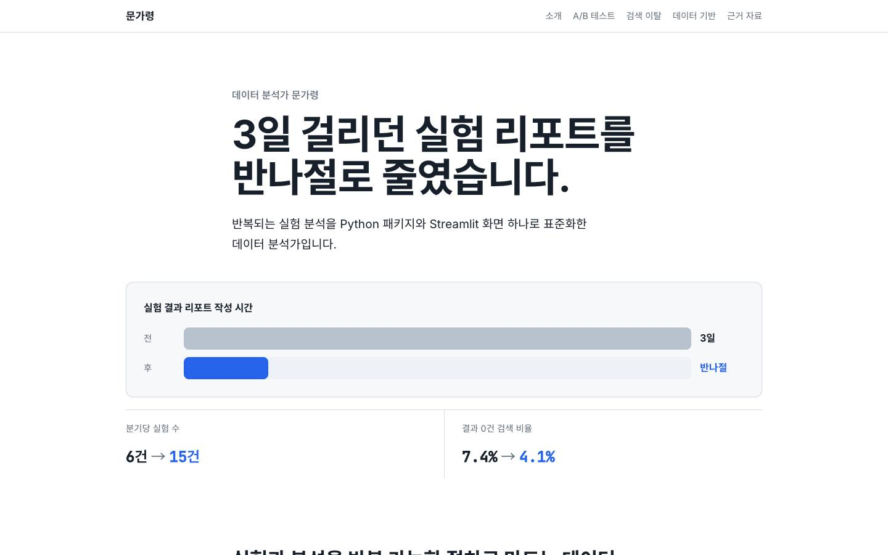


섹션 4/4 · 근거 8/8 · 경력 제목 없음
첫 화면 최대 64px · 208자 · 높이 4,238px
126초 · $0.37 (정리 $0.23 포함)
첫 화면의 긴 막대와 짧은 막대. 3일이 반나절로 줄어든 길이 차이를 페이지 로드 때 한 번만 자라나게 해서, 문장을 읽기 전에 결과를 눈으로 먼저 읽게 한다.
윤하린 · 프론트엔드 clarity
구조화 생성설계 → 채우기 · 키트 렌더링
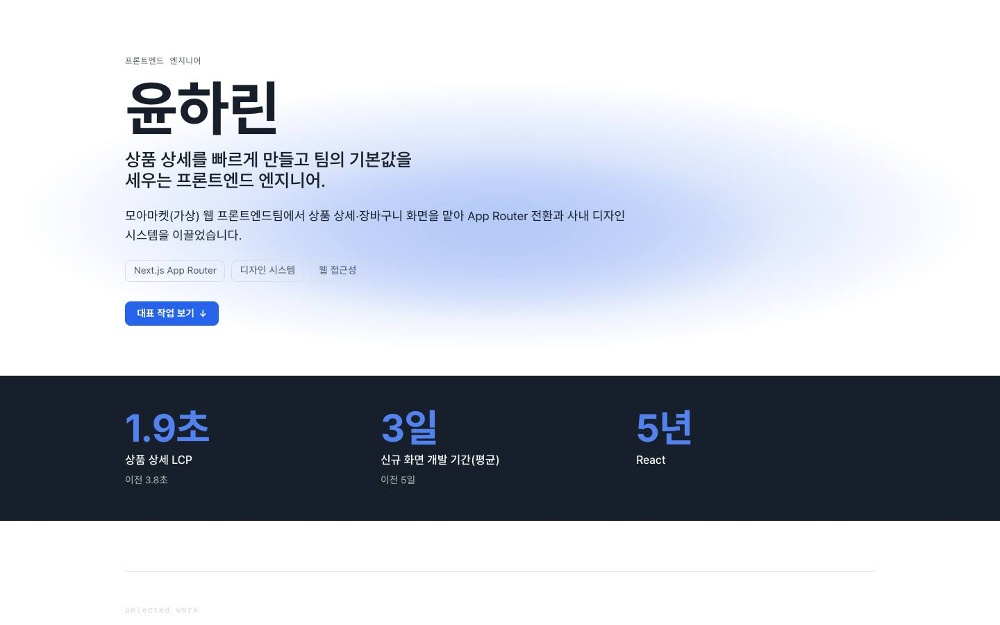


섹션 5/7 · 근거 2/8 · 경력 제목 있음
첫 화면 최대 83px · 230자 · 높이 4,902px
78초 · $0.83
자유 생성(지금)키트 부품으로 조판
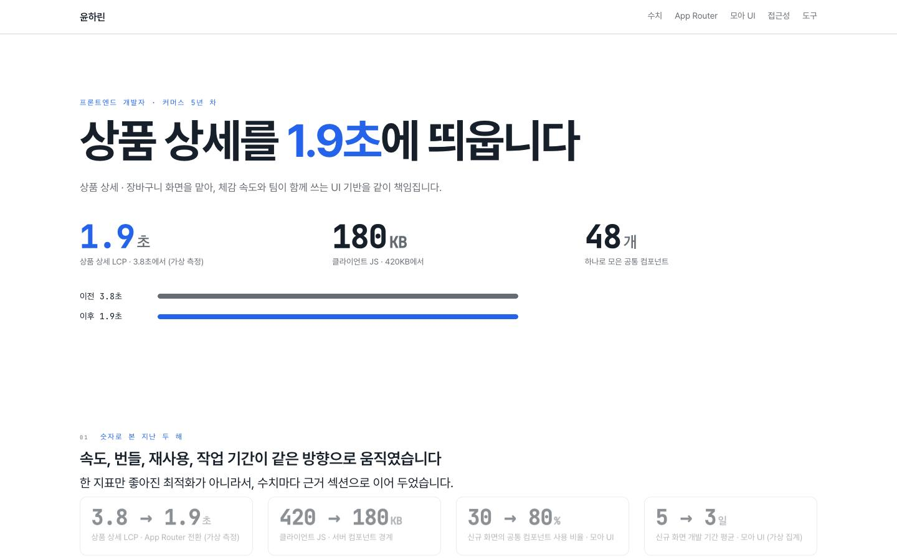


섹션 5/7 · 근거 1/8 · 경력 제목 없음
첫 화면 최대 74px · 436자 · 높이 4,148px
42초 · $0.13
키트 없이 자유모델이 CSS 전체 작성
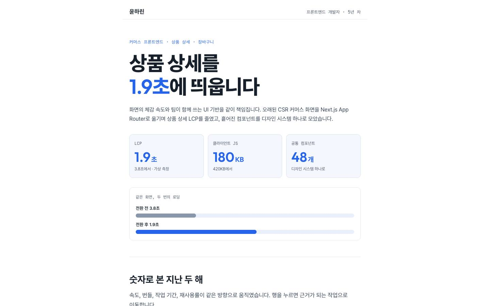


섹션 7/7 · 근거 2/8 · 경력 제목 없음
첫 화면 최대 60px · 348자 · 높이 4,073px
55초 · $0.15
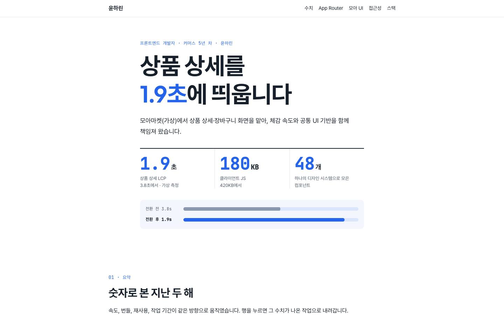


섹션 7/7 · 근거 3/8 · 경력 제목 없음
첫 화면 최대 68px · 306자 · 높이 4,410px
101초 · $0.35
출처 밖 숫자 1
+ 정리본원문 대신 자료 정리본
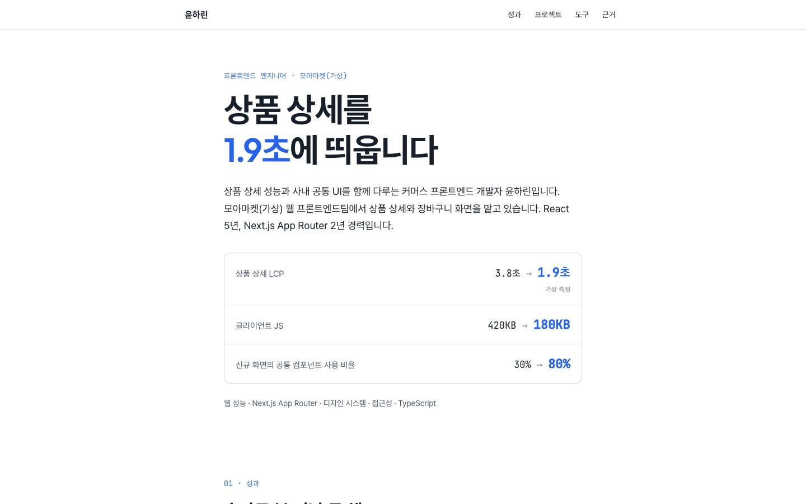


섹션 7/7 · 근거 7/8 · 경력 제목 있음
첫 화면 최대 60px · 324자 · 높이 5,815px
133초 · $0.22 (정리 $0.10 포함)
+ 디자인 지침frontend-design 본문
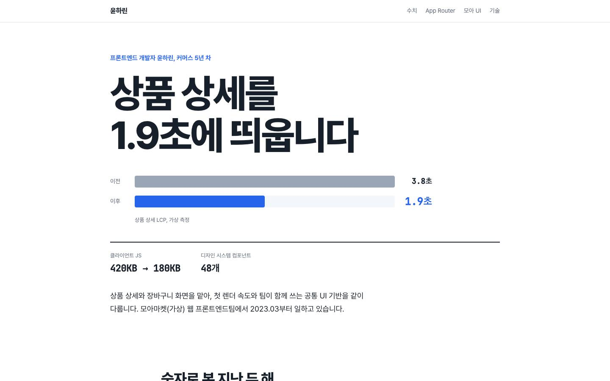


섹션 7/7 · 근거 2/8 · 경력 제목 없음
첫 화면 최대 92px · 233자 · 높이 4,598px
87초 · $0.21
첫 화면의 로딩 막대. 3.8초 막대는 3.8초 동안, 1.9초 막대는 1.9초 동안 차올라 숫자를 읽기 전에 속도 차이가 먼저 느껴진다.
+ 정리본 + 지침둘 다
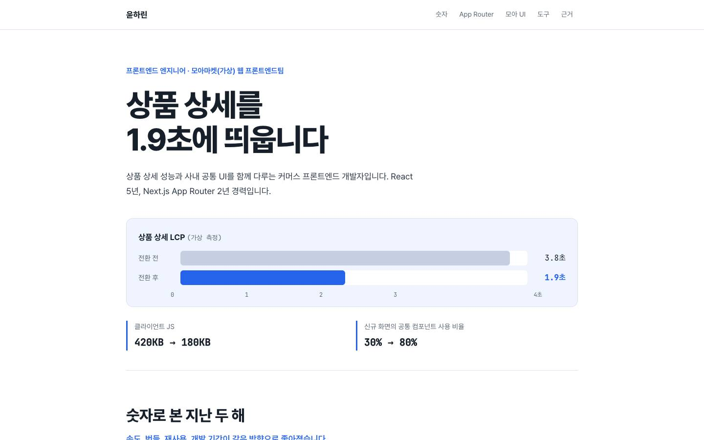


섹션 7/7 · 근거 7/8 · 경력 제목 있음
첫 화면 최대 64px · 288자 · 높이 5,375px
156초 · $0.24 (정리 $0.10 포함)
첫 화면의 시간 축 막대. 이전 3.8초 막대가 먼저 채워지고 1.9초 막대가 그 절반에서 멈춘다. 페이지 로드에서 한 번만 움직인다.
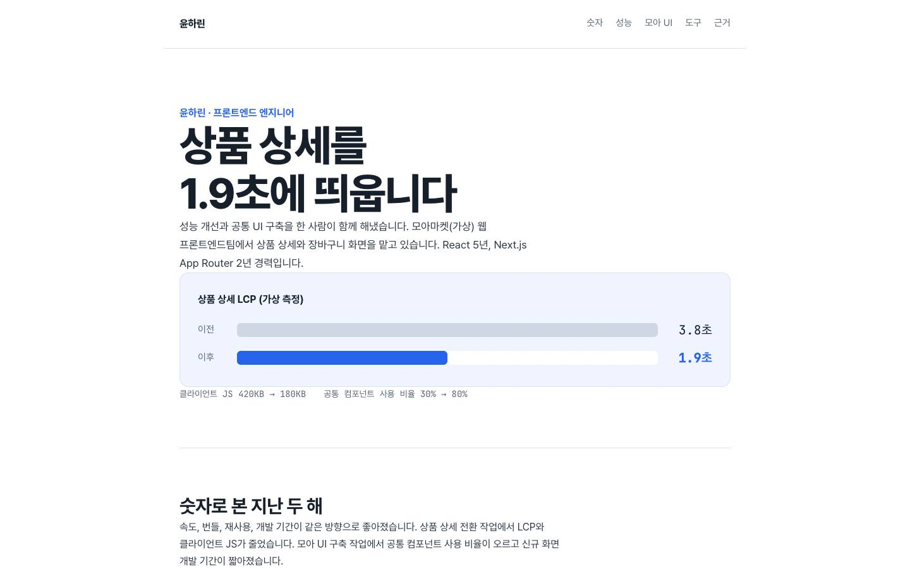


섹션 7/7 · 근거 7/8 · 경력 제목 있음
첫 화면 최대 68px · 375자 · 높이 5,385px
115초 · $0.22 (정리 $0.10 포함)
첫 화면의 이후 막대. 이전 값(3.8초)과 같은 길이로 시작해 절반(1.9초)까지 줄어드는 한 번의 움직임이다.
둘 다 · 배치 자유스타일은 색 · 서체 · 밀도만
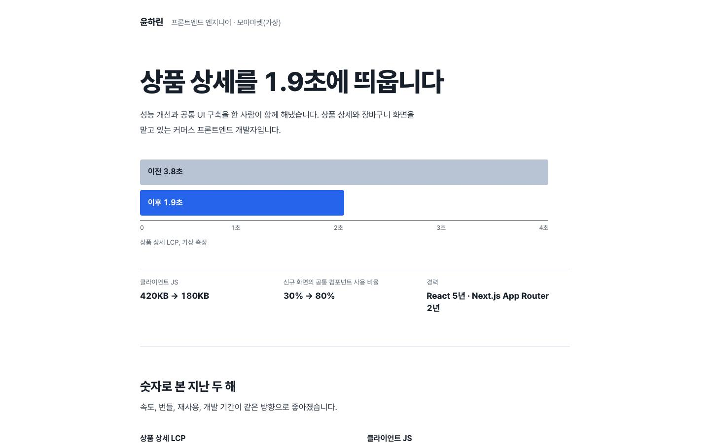


섹션 7/7 · 근거 6/8 · 경력 제목 있음
첫 화면 최대 54px · 300자 · 높이 5,397px
115초 · $0.24 (정리 $0.10 포함)
첫 화면 눈금 위에서 3.8초 막대는 그대로 있고 1.9초 막대가 0에서 절반 지점까지 한 번 자라 멈추는 장면. 이 한 번의 움직임 외에는 지면이 움직이지 않는다.
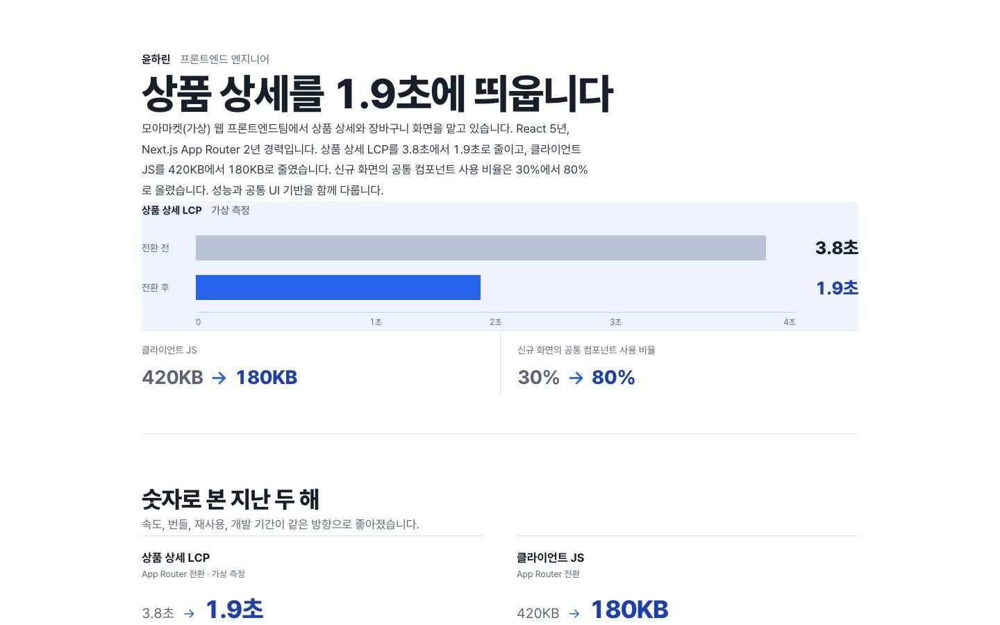


섹션 7/7 · 근거 7/8 · 경력 제목 있음
첫 화면 최대 60px · 438자 · 높이 4,475px
120초 · $0.28 (정리 $0.10 포함)
첫 화면에서 3.8초 막대와 1.9초 막대가 같은 시간축 위에 한 번 자라난다. 절반으로 줄어든 길이가 곧 주장이다.
둘 다 · 디자인 스펙디자인 시스템의 시각 규칙 추가
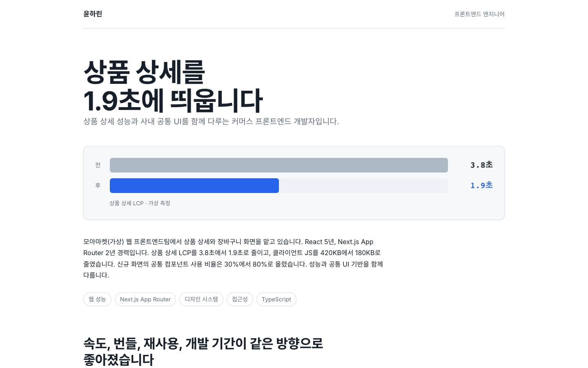


섹션 4/7 · 근거 7/8 · 경력 제목 있음
첫 화면 최대 64px · 383자 · 높이 4,844px
112초 · $0.24 (정리 $0.10 포함)
첫 화면의 LCP 막대 한 쌍. 3.8초 막대가 끝까지 차 있고 1.9초 막대가 정확히 절반까지 차오른다. 로드 때 한 번만 자란다.
윤하린 · 프론트엔드 editorial
구조화 생성설계 → 채우기 · 키트 렌더링
만들지 않음
자유 생성(지금)키트 부품으로 조판
만들지 않음
키트 없이 자유모델이 CSS 전체 작성
만들지 않음
+ 정리본원문 대신 자료 정리본
만들지 않음
+ 디자인 지침frontend-design 본문
만들지 않음
+ 정리본 + 지침둘 다
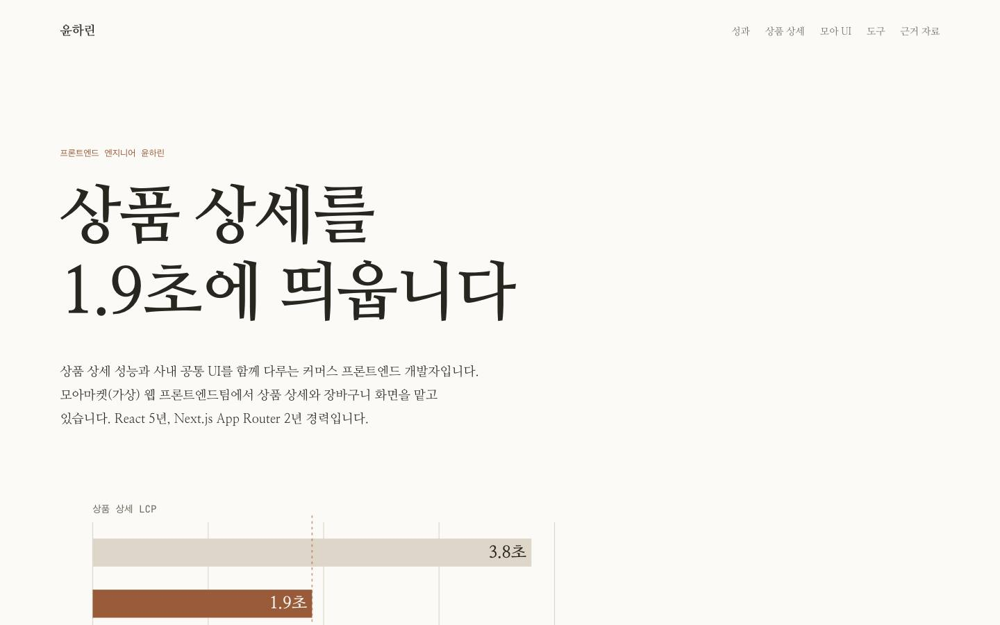


섹션 7/7 · 근거 6/8 · 경력 제목 있음
첫 화면 최대 92px · 197자 · 높이 6,656px
117초 · $0.25 (정리 $0.10 포함)
상품 상세 로딩 시간을 같은 눈금에 겹쳐 그린 두 줄 막대. 페이지가 열릴 때 3.8초 막대가 먼저 자라고 1.9초 막대가 그 절반에서 멈춘다. 지면의 움직임은 이것 하나뿐이다.
둘 다 · 배치 자유스타일은 색 · 서체 · 밀도만
만들지 않음
둘 다 · 디자인 스펙디자인 시스템의 시각 규칙 추가
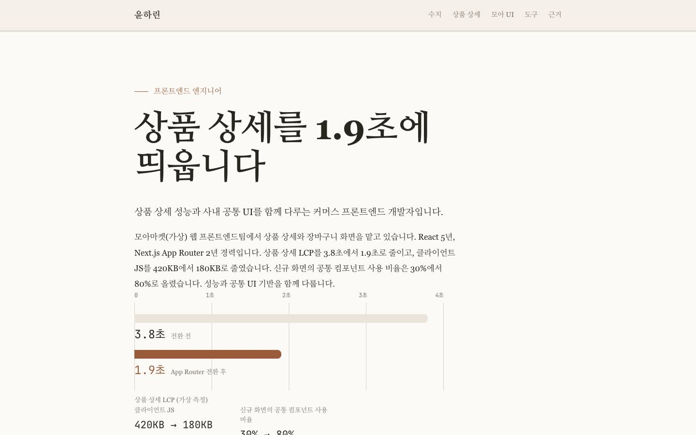


섹션 7/7 · 근거 7/8 · 경력 제목 있음
첫 화면 최대 72px · 400자 · 높이 6,962px
131초 · $0.27 (정리 $0.10 포함)
첫 화면의 로딩 타임라인. 0~4초 축에 3.8초 막대와 1.9초 막대가 나란히 놓이고, 1.9초 막대가 한 번 차분히 채워진다.
윤하린 · 프론트엔드 refero-linear-midnight
구조화 생성설계 → 채우기 · 키트 렌더링
만들지 않음
자유 생성(지금)키트 부품으로 조판
만들지 않음
키트 없이 자유모델이 CSS 전체 작성
만들지 않음
+ 정리본원문 대신 자료 정리본
만들지 않음
+ 디자인 지침frontend-design 본문
만들지 않음
+ 정리본 + 지침둘 다
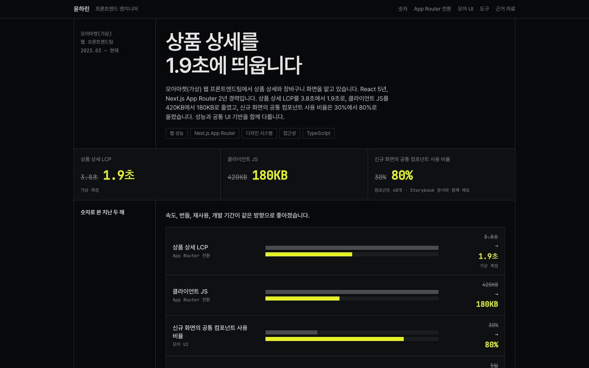


섹션 5/7 · 근거 7/8 · 경력 제목 있음
첫 화면 최대 52px · 573자 · 높이 3,351px
140초 · $0.28 (정리 $0.10 포함)
전/후 막대. '전' 길이의 회색 막대 아래에서 라임색 '후' 막대가 '전'의 길이에서 '후'의 길이로 한 번 변하며 자리 잡는다. 지표 줄에 올리거나 포커스하면 나머지 줄이 흐려져 한 지표만 견주게 된다.
둘 다 · 배치 자유스타일은 색 · 서체 · 밀도만
만들지 않음
둘 다 · 디자인 스펙디자인 시스템의 시각 규칙 추가
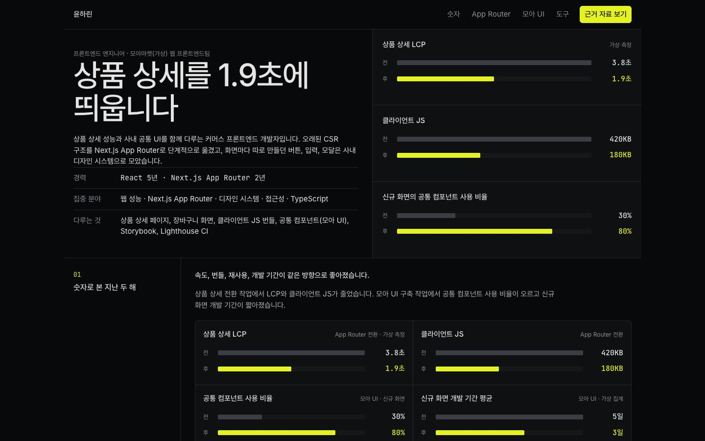


섹션 7/7 · 근거 7/8 · 경력 제목 있음
첫 화면 최대 64px · 729자 · 높이 3,343px
135초 · $0.29 (정리 $0.10 포함)
전 막대는 회색 전폭, 후 막대는 라임으로 줄어든 길이를 한 번 그어 보이는 비교 막대. 3.8→1.9, 420→180, 30→80, 5→3이 같은 문법으로 지면 곳곳에 반복된다.